En bref
Blizzard a annoncé plus de 600 nouvelles recettes, sans publier la liste complète. Cette fiche rassemble les 420 recettes de Forge relevées dans les fichiers du jeu (client 1.60.1.70862, consultés le 12 novembre 2026). Les noms et les compétences requises viennent des fichiers du jeu. L’obtention indiquée « inconnu » reste à confirmer. Les tableaux sont groupés par palier de compétence requise. Quand l’obtention, la source ou la zone n’est pas indiquée dans les données consultées, la cellule le dit clairement. Aucun taux de butin n’est repris, aucun n’était indiqué.[1][2][4]
Points clés
- 420 recettes de Forge listées ci-dessous, d’après les fichiers du jeu (client 1.60.1.70862, 12 novembre 2026) ; l’obtention « inconnu » reste à confirmer.[4] Données du jeu (client 1.60.1.70862)
- Obtention indiquée dans les fichiers du jeu : formateur 99, butin 16, quête 28, réputation 52, inconnu 225.[4] Données du jeu (client 1.60.1.70862)
- Blizzard n’a pas publié la liste complète des recettes, ni les formateurs, vendeurs, prix ou taux de butin.[1][2]
- Composants de 420 recettes et 118 matériaux liés à leur fiche « où le trouver » (fichiers du jeu).[5] Données du jeu (client 1.60.1.70862)
Comment lire cette liste
Cette liste n’est pas officielle. Blizzard n’a pas publié le détail des recettes de ce métier (vendeurs, formateurs, monstres, zones, prix, taux de butin). Les noms et les compétences ci-dessous viennent des fichiers du jeu (client 1.60.1.70862). L’obtention « inconnu » reste à confirmer. Le nom français est celui de la localisation du jeu lorsqu’il a été trouvé ; à défaut, le nom anglais est utilisé dans les deux langues. « Formateur » couvre aussi les recettes indiquées comme apprises automatiquement avec le métier. Une page d’ensemble déjà en ligne, Recettes et plans avancés (/fr/metiers/recettes-et-plans-avances/), rappelle les règles officielles d’obtention et les recettes à butin déjà présentées par zone.[1][2][4]
- 420 recettes listées pour Forge.[4] Données du jeu (client 1.60.1.70862)
- Répartition dans les fichiers du jeu : formateur 99, butin 16, quête 28, réputation 52, inconnu 225.[4] Données du jeu (client 1.60.1.70862)
- Zone renseignée pour 16 recette(s) ; non indiquée pour les autres.[4] Données du jeu (client 1.60.1.70862)
Compétence 1–75 — 51 recettes (données du jeu)
| Recette | Compétence requise | Obtention | Source | Zone | Statut |
|---|---|---|---|---|---|
| Pierre à aiguiser grossière | 1 | formateur | maître de métier (non nommé) | non indiqué | données du jeu |
| Caillou grossier | 1 | formateur | maître de métier (non nommé) | non indiqué | données du jeu |
| Bracelets en cuivre | 1 | formateur | appris automatiquement avec le métier | non indiqué | données du jeu |
| Bâtonnet en cuivre | 1 | formateur | appris automatiquement avec le métier | non indiqué | données du jeu |
| Haubergeon grossier en cuivre | 1 | formateur | appris automatiquement avec le métier | non indiqué | données du jeu |
| Pierre à aiguiser brute | 1 | formateur | appris automatiquement avec le métier | non indiqué | données du jeu |
| Caillou brut | 1 | formateur | appris automatiquement avec le métier | non indiqué | données du jeu |
| Meule à aiguiser | 1 | formateur | maître de métier (non nommé) | non indiqué | données du jeu |
| Lorica en cuivre | 30 | quête | Supplying the Front | non indiqué | données du jeu |
| Bottes ornées en cuivre | 35 | inconnu | non indiqué | non indiqué | données du jeu — obtention à confirmer |
| Gantelets ornés en cuivre | 35 | inconnu | non indiqué | non indiqué | données du jeu — obtention à confirmer |
| Bottes brillantes en cuivre | 35 | inconnu | non indiqué | non indiqué | données du jeu — obtention à confirmer |
| Silex à aiguiser brut | 35 | formateur | maître de métier (non nommé) | non indiqué | données du jeu |
| Bottes étranges en cuivre | 35 | inconnu | non indiqué | non indiqué | données du jeu — obtention à confirmer |
| Pantalon en anneaux de cuivre | 40 | formateur | maître de métier (non nommé) | non indiqué | données du jeu |
| Silex à aiguiser grossier | 44 | formateur | maître de métier (non nommé) | non indiqué | données du jeu |
| Ceinture d’acolyte en anneaux | 45 | inconnu | non indiqué | non indiqué | données du jeu — obtention à confirmer |
| Masse en cuivre | 45 | formateur | maître de métier (non nommé) | non indiqué | données du jeu |
| Ceinture de croisé en anneaux | 45 | inconnu | non indiqué | non indiqué | données du jeu — obtention à confirmer |
| Ceinture de garde en anneaux | 45 | inconnu | non indiqué | non indiqué | données du jeu — obtention à confirmer |
| Ceinture de protecteur en anneaux | 45 | inconnu | non indiqué | non indiqué | données du jeu — obtention à confirmer |
| Ceinture de vétéran en anneaux | 45 | inconnu | non indiqué | non indiqué | données du jeu — obtention à confirmer |
| Chaîne forge-ciel azur | 50 | réputation | Druides et druidesses de la Noctegriffe (Amical) | non indiqué | données du jeu |
| Garde-poignets forge-ciel azur | 50 | réputation | Druides et druidesses de la Noctegriffe (Amical) | non indiqué | données du jeu |
| Chaîne forge-ciel nuageuse | 50 | réputation | Druides et druidesses de la Noctegriffe (Amical) | non indiqué | données du jeu |
| Garde-poignets forge-ciel nuageux | 50 | réputation | Druides et druidesses de la Noctegriffe (Amical) | non indiqué | données du jeu |
| Hache en cuivre | 50 | formateur | maître de métier (non nommé) | non indiqué | données du jeu |
| Bottes en anneaux de cuivre | 50 | formateur | maître de métier (non nommé) | non indiqué | données du jeu |
| Bottes grossières en anneaux de cuivre | 50 | quête | From Stinger to Axe , The Quarry Smith | non indiqué | données du jeu |
| Gantelets forge-ciel azur | 55 | réputation | Druides et druidesses de la Noctegriffe (Amical) | non indiqué | données du jeu |
| Grèves forge-ciel azur | 55 | réputation | Druides et druidesses de la Noctegriffe (Amical) | non indiqué | données du jeu |
| Gantelets forge-ciel nuageux | 55 | réputation | Druides et druidesses de la Noctegriffe (Amical) | non indiqué | données du jeu |
| Grèves forge-ciel nuageuses | 55 | réputation | Druides et druidesses de la Noctegriffe (Amical) | non indiqué | données du jeu |
| Claymore en cuivre | 55 | formateur | maître de métier (non nommé) | non indiqué | données du jeu |
| Dague en cuivre | 55 | formateur | maître de métier (non nommé) | non indiqué | données du jeu |
| Epée courte en cuivre | 55 | formateur | maître de métier (non nommé) | non indiqué | données du jeu |
| Plastron runique en cuivre | 55 | inconnu | non indiqué | non indiqué | données du jeu — obtention à confirmer |
| Cotte de mailles forge-ciel azur | 60 | réputation | Druides et druidesses de la Noctegriffe (Honoré) | non indiqué | données du jeu |
| Garde-jambes forge-ciel azur | 60 | réputation | Druides et druidesses de la Noctegriffe (Honoré) | non indiqué | données du jeu |
| Cotte de mailles forge-ciel nuageuse | 60 | réputation | Druides et druidesses de la Noctegriffe (Honoré) | non indiqué | données du jeu |
| Garde-jambes forge-ciel nuageux | 60 | réputation | Druides et druidesses de la Noctegriffe (Honoré) | non indiqué | données du jeu |
| Hache de guerre en cuivre | 60 | formateur | maître de métier (non nommé) | non indiqué | données du jeu |
| Ceinture en anneaux de cuivre | 60 | formateur | maître de métier (non nommé) | non indiqué | données du jeu |
| Gantelets runiques en cuivre | 65 | formateur | maître de métier (non nommé) | non indiqué | données du jeu |
| Pantalon runique en cuivre | 65 | formateur | maître de métier (non nommé) | non indiqué | données du jeu |
| Grand maillet en cuivre | 70 | formateur | maître de métier (non nommé) | non indiqué | données du jeu |
| Cotte d'anneaux de Forgefer | 70 | formateur | maître de métier (non nommé) | non indiqué | données du jeu |
| Passe-partout en argent | 70 | formateur | maître de métier (non nommé) | non indiqué | données du jeu |
| Ceinture runique en cuivre | 75 | formateur | maître de métier (non nommé) | non indiqué | données du jeu |
| Bâtonnet d'argent | 75 | formateur | maître de métier (non nommé) | non indiqué | données du jeu |
| Hache de guerre lourde | 75 | formateur | maître de métier (non nommé) | non indiqué | données du jeu |
Compétence 76–150 — 99 recettes (données du jeu)
| Recette | Compétence requise | Obtention | Source | Zone | Statut |
|---|---|---|---|---|---|
| Cotte d’anneaux d’acolyte | 80 | inconnu | non indiqué | non indiqué | données du jeu — obtention à confirmer |
| Gants d’acolyte | 80 | butin | Taragaman the Hungerer ; Fel Steed / Shadow Charger | Ragefire Chasm ; Shadowfang Keep | données du jeu |
| Coup de poing en laiton | 80 | inconnu | non indiqué | non indiqué | données du jeu — obtention à confirmer |
| Cotte d’anneaux de croisé | 80 | inconnu | non indiqué | non indiqué | données du jeu — obtention à confirmer |
| Gants de croisé | 80 | butin | Rhahk'Zor ; Sneed ; Fel Steed / Shadow Charger | Shadowfang Keep ; The Deadmines | données du jeu |
| Cotte d’anneaux de garde | 80 | butin | Fel Steed / Shadow Charger | Shadowfang Keep | données du jeu |
| Gants de garde | 80 | butin | Taragaman the Hungerer | Ragefire Chasm | données du jeu |
| Cotte d’anneaux de protecteur | 80 | inconnu | non indiqué | non indiqué | données du jeu — obtention à confirmer |
| Gants de protecteur | 80 | butin | Taragaman the Hungerer ; Rhahk'Zor ; Mr. Smite ; Fel Steed / Shadow Charger | Ragefire Chasm ; Shadowfang Keep ; The Deadmines | données du jeu |
| Cotte d’anneaux de vétéran | 80 | inconnu | non indiqué | non indiqué | données du jeu — obtention à confirmer |
| Gants de vétéran | 80 | butin | Jergosh the Invoker ; Sneed ; Cookie | Ragefire Chasm ; The Deadmines | données du jeu |
| Brassards runiques en cuivre | 84 | formateur | maître de métier (non nommé) | non indiqué | données du jeu |
| Bottes d’acolyte | 85 | inconnu | non indiqué | non indiqué | données du jeu — obtention à confirmer |
| Bottes de croisé | 85 | inconnu | non indiqué | non indiqué | données du jeu — obtention à confirmer |
| Bottes de garde | 85 | inconnu | non indiqué | non indiqué | données du jeu — obtention à confirmer |
| Bottes de protecteur | 85 | inconnu | non indiqué | non indiqué | données du jeu — obtention à confirmer |
| Bottes de vétéran | 85 | inconnu | non indiqué | non indiqué | données du jeu — obtention à confirmer |
| Bottes grossières en bronze | 92 | formateur | maître de métier (non nommé) | non indiqué | données du jeu |
| Silex à aiguiser lourd | 94 | formateur | maître de métier (non nommé) | non indiqué | données du jeu |
| Jambières d’acolyte en anneaux | 95 | inconnu | non indiqué | non indiqué | données du jeu — obtention à confirmer |
| Heaume d’acolyte en anneaux argentés | 95 | butin | Lady Sarevess | Blackfathom Deeps | données du jeu |
| Dory en bronze | 95 | inconnu | non indiqué | non indiqué | données du jeu — obtention à confirmer |
| Jambières de croisé en anneaux | 95 | inconnu | non indiqué | non indiqué | données du jeu — obtention à confirmer |
| Heaume de croisé en anneaux argentés | 95 | inconnu | non indiqué | non indiqué | données du jeu — obtention à confirmer |
| Jambières de garde en anneaux | 95 | inconnu | non indiqué | non indiqué | données du jeu — obtention à confirmer |
| Heaume de garde en anneaux argentés | 95 | butin | Fel Steed / Shadow Charger | Shadowfang Keep | données du jeu |
| Pierre à aiguiser lourde | 95 | formateur | maître de métier (non nommé) | non indiqué | données du jeu |
| Caillou lourd | 95 | formateur | maître de métier (non nommé) | non indiqué | données du jeu |
| Jambières de protecteur en anneaux | 95 | inconnu | non indiqué | non indiqué | données du jeu — obtention à confirmer |
| Heaume de protecteur en anneaux argentés | 95 | butin | Fel Steed / Shadow Charger ; Ghamoo-ra ; Lady Sarevess ; Targorr the Dread | Blackfathom Deeps ; Shadowfang Keep ; The Stockade | données du jeu |
| Jambières de vétéran en anneaux | 95 | inconnu | non indiqué | non indiqué | données du jeu — obtention à confirmer |
| Heaume de vétéran en anneaux argentés | 95 | butin | Targorr the Dread | The Stockade | données du jeu |
| Poignard mortel en bronze | 100 | inconnu | non indiqué | non indiqué | données du jeu — obtention à confirmer |
| Lourde épée large en cuivre | 100 | formateur | maître de métier (non nommé) | non indiqué | données du jeu |
| Cuirasse de Forgefer | 100 | quête | Gearing Redridge | non indiqué | données du jeu |
| Epaulières en bronze argenté | 100 | inconnu | non indiqué | non indiqué | données du jeu — obtention à confirmer |
| Bottes en argent fin | 100 | inconnu | non indiqué | non indiqué | données du jeu — obtention à confirmer |
| Grand couteau en bronze | 102 | formateur | maître de métier (non nommé) | non indiqué | données du jeu |
| Cuirasse en bronze argenté | 105 | inconnu | non indiqué | non indiqué | données du jeu — obtention à confirmer |
| Gantelets en argent fin | 105 | inconnu | non indiqué | non indiqué | données du jeu — obtention à confirmer |
| Jambières en argent fin | 105 | inconnu | non indiqué | non indiqué | données du jeu — obtention à confirmer |
| Masse en bronze | 107 | formateur | maître de métier (non nommé) | non indiqué | données du jeu |
| Dague à perles | 107 | formateur | maître de métier (non nommé) | non indiqué | données du jeu |
| Brassards grossiers en bronze | 107 | formateur | maître de métier (non nommé) | non indiqué | données du jeu |
| Epaulières grossières en bronze | 107 | formateur | maître de métier (non nommé) | non indiqué | données du jeu |
| Cotte d’anneaux argentés d’acolyte | 110 | inconnu | non indiqué | non indiqué | données du jeu — obtention à confirmer |
| Marteau de forgeron fêlé | 110 | inconnu | non indiqué | non indiqué | données du jeu — obtention à confirmer |
| Cotte d’anneaux argentés de croisé | 110 | inconnu | non indiqué | non indiqué | données du jeu — obtention à confirmer |
| Cotte d’anneaux argentés de garde | 110 | inconnu | non indiqué | non indiqué | données du jeu — obtention à confirmer |
| Cotte d’anneaux argentés de protecteur | 110 | inconnu | non indiqué | non indiqué | données du jeu — obtention à confirmer |
| Épaulières en argent fin | 110 | inconnu | non indiqué | non indiqué | données du jeu — obtention à confirmer |
| Cotte d’anneaux argentés de vétéran | 110 | inconnu | non indiqué | non indiqué | données du jeu — obtention à confirmer |
| Hache en bronze | 112 | formateur | maître de métier (non nommé) | non indiqué | données du jeu |
| Cuirasse grossière en bronze | 112 | formateur | maître de métier (non nommé) | non indiqué | données du jeu |
| Jambières grossières en bronze | 112 | formateur | maître de métier (non nommé) | non indiqué | données du jeu |
| Marteau iridescent | 115 | inconnu | non indiqué | non indiqué | données du jeu — obtention à confirmer |
| Epée courte en bronze | 117 | formateur | maître de métier (non nommé) | non indiqué | données du jeu |
| Brassards guillochés en bronze | 117 | formateur | maître de métier (non nommé) | non indiqué | données du jeu |
| Bottes en fer émeraude | 120 | inconnu | non indiqué | non indiqué | données du jeu — obtention à confirmer |
| Boucle en fer | 120 | formateur | maître de métier (non nommé) | non indiqué | données du jeu |
| Puissant marteau en fer | 120 | inconnu | non indiqué | non indiqué | données du jeu — obtention à confirmer |
| Heaume d’acolyte en anneaux | 125 | inconnu | non indiqué | non indiqué | données du jeu — obtention à confirmer |
| Jambières d’acolyte en anneaux argentés | 125 | butin | Aku'mai ; Agathelos the Raging | Blackfathom Deeps ; Razorfen Kraul | données du jeu |
| Heaume de croisé en anneaux | 125 | inconnu | non indiqué | non indiqué | données du jeu — obtention à confirmer |
| Jambières de croisé en anneaux argentés | 125 | butin | Kam Deepfury ; Overlord Ramtusk | Razorfen Kraul ; The Stockade | données du jeu |
| Gantelets en fer émeraude | 125 | inconnu | non indiqué | non indiqué | données du jeu — obtention à confirmer |
| Heaume de garde en anneaux | 125 | inconnu | non indiqué | non indiqué | données du jeu — obtention à confirmer |
| Jambières de garde en anneaux argentés | 125 | butin | Aku'mai ; Dextren Ward | Blackfathom Deeps ; The Stockade | données du jeu |
| Pointe de bouclier en fer | 125 | inconnu | non indiqué | non indiqué | données du jeu — obtention à confirmer |
| Heaume de protecteur en anneaux | 125 | inconnu | non indiqué | non indiqué | données du jeu — obtention à confirmer |
| Jambières de protecteur en anneaux argentés | 125 | butin | Gelihast ; Aku'mai ; Hamhock | Blackfathom Deeps ; The Stockade | données du jeu |
| Cuirasse en argent fin | 125 | inconnu | non indiqué | non indiqué | données du jeu — obtention à confirmer |
| Heaume de vétéran en anneaux | 125 | inconnu | non indiqué | non indiqué | données du jeu — obtention à confirmer |
| Jambières de vétéran en anneaux argentés | 125 | butin | Gelihast ; Old Serra'kis ; Dextren Ward | Blackfathom Deeps ; The Stockade | données du jeu |
| Epée de guerre en bronze | 127 | formateur | maître de métier (non nommé) | non indiqué | données du jeu |
| Masse lourde en bronze | 127 | formateur | maître de métier (non nommé) | non indiqué | données du jeu |
| Bottes en bronze argenté | 127 | formateur | maître de métier (non nommé) | non indiqué | données du jeu |
| Poings de fer | 130 | inconnu | non indiqué | non indiqué | données du jeu — obtention à confirmer |
| Jambières en bronze argenté | 130 | inconnu | non indiqué | non indiqué | données du jeu — obtention à confirmer |
| Solide maillet en fer | 130 | inconnu | non indiqué | non indiqué | données du jeu — obtention à confirmer |
| Hache de guerre en bronze | 132 | formateur | maître de métier (non nommé) | non indiqué | données du jeu |
| Gantelets de Forgefer | 132 | formateur | maître de métier (non nommé) | non indiqué | données du jeu |
| Gantelets en bronze argenté | 132 | formateur | maître de métier (non nommé) | non indiqué | données du jeu |
| Cuirasse barbare en fer | 135 | quête | Barbaric Battlements | non indiqué | données du jeu |
| Epaulières barbares en fer | 135 | quête | On Iron Pauldrons | non indiqué | données du jeu |
| Epaulières en fer émeraude | 135 | inconnu | non indiqué | non indiqué | données du jeu — obtention à confirmer |
| Epée courte en fer trempé | 135 | inconnu | non indiqué | non indiqué | données du jeu — obtention à confirmer |
| Enclume | 140 | butin | Gilnid | The Deadmines | données du jeu |
| Contrepoids en fer | 140 | inconnu | non indiqué | non indiqué | données du jeu — obtention à confirmer |
| Cuirasse en argent lumineux | 142 | formateur | maître de métier (non nommé) | non indiqué | données du jeu |
| Marteau de guerre en bronze | 147 | formateur | maître de métier (non nommé) | non indiqué | données du jeu |
| Jambières en fer émeraude | 149 | formateur | maître de métier (non nommé) | non indiqué | données du jeu |
| Casque barbare en fer | 150 | quête | Horns of Frenzy | non indiqué | données du jeu |
| Serpentine de jade | 150 | inconnu | non indiqué | non indiqué | données du jeu — obtention à confirmer |
| Ceinture de justicier | 150 | inconnu | non indiqué | non indiqué | données du jeu — obtention à confirmer |
| Ceinture d’officier | 150 | inconnu | non indiqué | non indiqué | données du jeu — obtention à confirmer |
| Ceinture de préfet | 150 | inconnu | non indiqué | non indiqué | données du jeu — obtention à confirmer |
| Ceinture de sentinelle | 150 | inconnu | non indiqué | non indiqué | données du jeu — obtention à confirmer |
| Ceinture de grand gardien | 150 | inconnu | non indiqué | non indiqué | données du jeu — obtention à confirmer |
Compétence 151–225 — 88 recettes (données du jeu)
| Recette | Compétence requise | Obtention | Source | Zone | Statut |
|---|---|---|---|---|---|
| Bottes barbares en fer | 155 | quête | Trampled Under Foot | non indiqué | données du jeu |
| Epée d'acier lunaire | 155 | inconnu | non indiqué | non indiqué | données du jeu — obtention à confirmer |
| Bracelets en fer émeraude | 159 | formateur | maître de métier (non nommé) | non indiqué | données du jeu |
| Gants barbares en fer | 160 | quête | Joys of Omosh | non indiqué | données du jeu |
| Gigantesque hache en fer | 160 | inconnu | non indiqué | non indiqué | données du jeu — obtention à confirmer |
| Bottes en acier poli | 160 | inconnu | non indiqué | non indiqué | données du jeu — obtention à confirmer |
| Lance en acier | 160 | inconnu | non indiqué | non indiqué | données du jeu — obtention à confirmer |
| Heaume en fer émeraude | 164 | formateur | maître de métier (non nommé) | non indiqué | données du jeu |
| Lame de l'hiver | 165 | inconnu | non indiqué | non indiqué | données du jeu — obtention à confirmer |
| Étoile du matin en fer | 165 | quête | Big, No, MASSIVE Iron Axes | non indiqué | données du jeu |
| Dragonne en acier | 165 | inconnu | non indiqué | non indiqué | données du jeu — obtention à confirmer |
| Silex à aiguiser solide | 170 | formateur | maître de métier (non nommé) | non indiqué | données du jeu |
| Pierre à aiguiser solide | 170 | formateur | maître de métier (non nommé) | non indiqué | données du jeu |
| Caillou solide | 170 | formateur | maître de métier (non nommé) | non indiqué | données du jeu |
| Passe-partout en vrai-argent | 170 | formateur | maître de métier (non nommé) | non indiqué | données du jeu |
| Dague d'acier luisante | 174 | formateur | maître de métier (non nommé) | non indiqué | données du jeu |
| Haubert en fer émeraude | 174 | formateur | maître de métier (non nommé) | non indiqué | données du jeu |
| Heaume forge-ciel azur | 175 | réputation | Kirin Tor (Amical) | non indiqué | données du jeu |
| Espauliers forge-ciel azur | 175 | réputation | Kirin Tor (Amical) | non indiqué | données du jeu |
| Heaume forge-ciel nuageux | 175 | réputation | Cercle terrestre (Amical) | non indiqué | données du jeu |
| Espauliers forge-ciel nuageux | 175 | réputation | Cercle terrestre (Amical) | non indiqué | données du jeu |
| Tigresse glaciale | 175 | inconnu | non indiqué | non indiqué | données du jeu — obtention à confirmer |
| Gantelets de justicier | 175 | inconnu | non indiqué | non indiqué | données du jeu — obtention à confirmer |
| Gantelets d’officier | 175 | inconnu | non indiqué | non indiqué | données du jeu — obtention à confirmer |
| Gantelets de préfet | 175 | inconnu | non indiqué | non indiqué | données du jeu — obtention à confirmer |
| Gantelets de sentinelle | 175 | inconnu | non indiqué | non indiqué | données du jeu — obtention à confirmer |
| Croissant des ombres | 175 | inconnu | non indiqué | non indiqué | données du jeu — obtention à confirmer |
| Bâtonnet en vrai-argent | 175 | formateur | maître de métier (non nommé) | non indiqué | données du jeu |
| Gantelets de grand gardien | 175 | inconnu | non indiqué | non indiqué | données du jeu — obtention à confirmer |
| Épée courte en mithril | 180 | inconnu | non indiqué | non indiqué | données du jeu — obtention à confirmer |
| Jambières lourdes en mithril | 185 | inconnu | non indiqué | non indiqué | données du jeu — obtention à confirmer |
| Brassards en plaques de mithril | 190 | inconnu | non indiqué | non indiqué | données du jeu — obtention à confirmer |
| Pointe de bouclier en mithril | 190 | inconnu | non indiqué | non indiqué | données du jeu — obtention à confirmer |
| Marteau de guerre en mithril | 190 | inconnu | non indiqué | non indiqué | données du jeu — obtention à confirmer |
| Cuirasse en acier | 194 | formateur | maître de métier (non nommé) | non indiqué | données du jeu |
| Hache lumineuse bleue | 195 | inconnu | non indiqué | non indiqué | données du jeu — obtention à confirmer |
| Gantelets lourds en mithril | 195 | formateur | maître de métier (non nommé) | non indiqué | données du jeu |
| Epaulières lourdes en mithril | 195 | formateur | maître de métier (non nommé) | non indiqué | données du jeu |
| Marteau de forgeron en mithril | 195 | inconnu | non indiqué | non indiqué | données du jeu — obtention à confirmer |
| Griffes en mithril | 195 | inconnu | non indiqué | non indiqué | données du jeu — obtention à confirmer |
| Claymore en mithril | 195 | inconnu | non indiqué | non indiqué | données du jeu — obtention à confirmer |
| Gants ornés en mithril | 195 | quête | The Great Silver Deceiver | non indiqué | données du jeu |
| Jambières ornées en mithril | 195 | quête | Smelt On, Smelt Off | non indiqué | données du jeu |
| Cuirasse brillante en mithril | 195 | inconnu | non indiqué | non indiqué | données du jeu — obtention à confirmer |
| Espauliers brillants en mithril | 195 | inconnu | non indiqué | non indiqué | données du jeu — obtention à confirmer |
| Cylindre damasquiné en mithril | 200 | inconnu | non indiqué | non indiqué | données du jeu — obtention à confirmer |
| Bottes de justicier | 200 | inconnu | non indiqué | non indiqué | données du jeu — obtention à confirmer |
| Jambières en plaques de mithril | 200 | formateur | maître de métier (non nommé) | non indiqué | données du jeu |
| Bottes d’officier | 200 | inconnu | non indiqué | non indiqué | données du jeu — obtention à confirmer |
| Epaulières ornées en mithril | 200 | quête | The Art of Imbuing Magic | non indiqué | données du jeu |
| Bottes de préfet | 200 | inconnu | non indiqué | non indiqué | données du jeu — obtention à confirmer |
| Bottes de sentinelle | 200 | inconnu | non indiqué | non indiqué | données du jeu — obtention à confirmer |
| Bottes brillantes en mithril | 200 | inconnu | non indiqué | non indiqué | données du jeu — obtention à confirmer |
| Bottes de grand gardien | 200 | inconnu | non indiqué | non indiqué | données du jeu — obtention à confirmer |
| Lame corrompue en mithril | 200 | inconnu | non indiqué | non indiqué | données du jeu — obtention à confirmer |
| Hache lourde en mithril | 204 | formateur | maître de métier (non nommé) | non indiqué | données du jeu |
| Heaume en plaques d'acier | 205 | formateur | maître de métier (non nommé) | non indiqué | données du jeu |
| Espauliers de justicier | 210 | inconnu | non indiqué | non indiqué | données du jeu — obtention à confirmer |
| Gants en plaques de mithril | 210 | formateur | maître de métier (non nommé) | non indiqué | données du jeu |
| Épaulières en plaques de mithril | 210 | inconnu | non indiqué | non indiqué | données du jeu — obtention à confirmer |
| Eperons en mithril | 210 | inconnu | non indiqué | non indiqué | données du jeu — obtention à confirmer |
| Stylet en mithril | 210 | inconnu | non indiqué | non indiqué | données du jeu — obtention à confirmer |
| Espauliers d’officier | 210 | inconnu | non indiqué | non indiqué | données du jeu — obtention à confirmer |
| Espauliers de préfet | 210 | inconnu | non indiqué | non indiqué | données du jeu — obtention à confirmer |
| Espauliers de sentinelle | 210 | inconnu | non indiqué | non indiqué | données du jeu — obtention à confirmer |
| Espauliers de grand gardien | 210 | inconnu | non indiqué | non indiqué | données du jeu — obtention à confirmer |
| Hache d’armes chargée en mithril | 215 | inconnu | non indiqué | non indiqué | données du jeu — obtention à confirmer |
| Heaume brillant en mithril | 215 | inconnu | non indiqué | non indiqué | données du jeu — obtention à confirmer |
| Gantelets en vrai-argent | 215 | formateur | maître de métier (non nommé) | non indiqué | données du jeu |
| Cuirasse lourde en mithril | 220 | formateur | maître de métier (non nommé) | non indiqué | données du jeu |
| Heaume lourd en mithril | 220 | inconnu | non indiqué | non indiqué | données du jeu — obtention à confirmer |
| Camail en mithril | 220 | formateur | maître de métier (non nommé) | non indiqué | données du jeu |
| Jambières de guerre orques | 220 | formateur | maître de métier (non nommé) | non indiqué | données du jeu |
| Marteau runique en mithril | 220 | inconnu | non indiqué | non indiqué | données du jeu — obtention à confirmer |
| Gantelets brillants en mithril | 220 | inconnu | non indiqué | non indiqué | données du jeu — obtention à confirmer |
| Pantalon brillant en mithril | 220 | inconnu | non indiqué | non indiqué | données du jeu — obtention à confirmer |
| Grande masse noire | 224 | formateur | maître de métier (non nommé) | non indiqué | données du jeu |
| Silex à aiguiser dense | 225 | formateur | maître de métier (non nommé) | non indiqué | données du jeu |
| Pierre à aiguiser dense | 225 | formateur | maître de métier (non nommé) | non indiqué | données du jeu |
| Caillou dense | 225 | formateur | maître de métier (non nommé) | non indiqué | données du jeu |
| Bottes lourdes en mithril | 225 | formateur | maître de métier (non nommé) | non indiqué | données du jeu |
| Garde-poignets de justicier | 225 | inconnu | non indiqué | non indiqué | données du jeu — obtention à confirmer |
| Garde-poignets d’officier | 225 | inconnu | non indiqué | non indiqué | données du jeu — obtention à confirmer |
| Garde-poignets de préfet | 225 | inconnu | non indiqué | non indiqué | données du jeu — obtention à confirmer |
| Garde-poignets de sentinelle | 225 | inconnu | non indiqué | non indiqué | données du jeu — obtention à confirmer |
| Armure en thorium | 225 | inconnu | non indiqué | non indiqué | données du jeu — obtention à confirmer |
| Ceinture en thorium | 225 | inconnu | non indiqué | non indiqué | données du jeu — obtention à confirmer |
| Garde-poignets de grand gardien | 225 | inconnu | non indiqué | non indiqué | données du jeu — obtention à confirmer |
Compétence 226–300 — 182 recettes (données du jeu)
| Recette | Compétence requise | Obtention | Source | Zone | Statut |
|---|---|---|---|---|---|
| Le Briseur | 229 | formateur | maître de métier (non nommé) | non indiqué | données du jeu |
| Kriss d'ébène | 230 | inconnu | non indiqué | non indiqué | données du jeu — obtention à confirmer |
| Cuirasse ornée en mithril | 230 | formateur | maître de métier (non nommé) | non indiqué | données du jeu |
| Brassards en thorium | 230 | inconnu | non indiqué | non indiqué | données du jeu — obtention à confirmer |
| Bottes ornées en mithril | 235 | formateur | maître de métier (non nommé) | non indiqué | données du jeu |
| Heaume orné en mithril | 235 | formateur | maître de métier (non nommé) | non indiqué | données du jeu |
| Ceinture radieuse | 235 | inconnu | non indiqué | non indiqué | données du jeu — obtention à confirmer |
| Cuirasse en vrai-argent | 235 | formateur | maître de métier (non nommé) | non indiqué | données du jeu |
| Lame fantôme | 239 | formateur | maître de métier (non nommé) | non indiqué | données du jeu |
| Bottes bénies en plaques | 240 | inconnu | non indiqué | non indiqué | données du jeu — obtention à confirmer |
| Espauliers bénis en plaques | 240 | inconnu | non indiqué | non indiqué | données du jeu — obtention à confirmer |
| Pulvériseur en sombrefer | 240 | inconnu | non indiqué | non indiqué | données du jeu — obtention à confirmer |
| Ceinture impériale en plaques | 240 | quête | Ceinture impériale en plaques | non indiqué | données du jeu |
| Epaulières impériales en plaques | 240 | quête | Epaulières impériales en plaques | non indiqué | données du jeu |
| Solerets de justicier | 240 | inconnu | non indiqué | non indiqué | données du jeu — obtention à confirmer |
| Solerets d’officier | 240 | inconnu | non indiqué | non indiqué | données du jeu — obtention à confirmer |
| Solerets de préfet | 240 | inconnu | non indiqué | non indiqué | données du jeu — obtention à confirmer |
| Solerets de sentinelle | 240 | inconnu | non indiqué | non indiqué | données du jeu — obtention à confirmer |
| Solerets de grand gardien | 240 | inconnu | non indiqué | non indiqué | données du jeu — obtention à confirmer |
| Corruptrice | 244 | formateur | maître de métier (non nommé) | non indiqué | données du jeu |
| Bâtonnet en arcanite | 245 | formateur | maître de métier (non nommé) | non indiqué | données du jeu |
| Passe-partout en arcanite | 245 | formateur | maître de métier (non nommé) | non indiqué | données du jeu |
| Gantelets bénis en plaques | 245 | inconnu | non indiqué | non indiqué | données du jeu — obtention à confirmer |
| Cotte de mailles en sombrefer | 245 | inconnu | non indiqué | non indiqué | données du jeu — obtention à confirmer |
| Bracelets impériaux en plaques | 245 | quête | Imperial Plate Bracer | non indiqué | données du jeu |
| Cuirasse radieuse | 245 | inconnu | non indiqué | non indiqué | données du jeu — obtention à confirmer |
| Découpeuse en sombrefer | 250 | inconnu | non indiqué | non indiqué | données du jeu — obtention à confirmer |
| Courroux de l'aube | 250 | quête | Snakestone of the Shadow Huntress | non indiqué | données du jeu |
| Gants de justicier | 250 | inconnu | non indiqué | non indiqué | données du jeu — obtention à confirmer |
| Sangle de justicier | 250 | inconnu | non indiqué | non indiqué | données du jeu — obtention à confirmer |
| Gants d’officier | 250 | inconnu | non indiqué | non indiqué | données du jeu — obtention à confirmer |
| Sangle d’officier | 250 | inconnu | non indiqué | non indiqué | données du jeu — obtention à confirmer |
| Hachette ornée en thorium | 250 | inconnu | non indiqué | non indiqué | données du jeu — obtention à confirmer |
| Gants de préfet | 250 | inconnu | non indiqué | non indiqué | données du jeu — obtention à confirmer |
| Sangle de préfet | 250 | inconnu | non indiqué | non indiqué | données du jeu — obtention à confirmer |
| Gants de sentinelle | 250 | inconnu | non indiqué | non indiqué | données du jeu — obtention à confirmer |
| Sangle de sentinelle | 250 | inconnu | non indiqué | non indiqué | données du jeu — obtention à confirmer |
| Ceste en thorium | 250 | inconnu | non indiqué | non indiqué | données du jeu — obtention à confirmer |
| Plombée en thorium | 250 | inconnu | non indiqué | non indiqué | données du jeu — obtention à confirmer |
| Pointe de bouclier en thorium | 250 | inconnu | non indiqué | non indiqué | données du jeu — obtention à confirmer |
| Gants de grand gardien | 250 | inconnu | non indiqué | non indiqué | données du jeu — obtention à confirmer |
| Sangle de grand gardien | 250 | inconnu | non indiqué | non indiqué | données du jeu — obtention à confirmer |
| Epée de guerre en thorium | 254 | formateur | maître de métier (non nommé) | non indiqué | données du jeu |
| Championne en vrai-argent | 254 | formateur | maître de métier (non nommé) | non indiqué | données du jeu |
| Rapière flamboyante | 255 | quête | Corruption | non indiqué | données du jeu |
| Brassards bénis en plaques | 255 | inconnu | non indiqué | non indiqué | données du jeu — obtention à confirmer |
| Epaulières en sombrefer | 255 | inconnu | non indiqué | non indiqué | données du jeu — obtention à confirmer |
| Marteau de guerre enchanté | 255 | quête | Sweet Serenity , Sweet Serenity | non indiqué | données du jeu |
| Grande hache en thorium | 255 | inconnu | non indiqué | non indiqué | données du jeu — obtention à confirmer |
| Gantelets impériaux en plaques | 255 | inconnu | non indiqué | non indiqué | données du jeu — obtention à confirmer |
| Bottes en thorium | 255 | inconnu | non indiqué | non indiqué | données du jeu — obtention à confirmer |
| Heaume en thorium | 255 | inconnu | non indiqué | non indiqué | données du jeu — obtention à confirmer |
| Harnois en sombrefer | 260 | inconnu | non indiqué | non indiqué | données du jeu — obtention à confirmer |
| Cuirasse démoniaque | 260 | quête | The Demon Forge | non indiqué | données du jeu |
| Gantelets radieux | 260 | inconnu | non indiqué | non indiqué | données du jeu — obtention à confirmer |
| Sérénité | 260 | inconnu | non indiqué | non indiqué | données du jeu — obtention à confirmer |
| Hache d’hast en thorium | 260 | inconnu | non indiqué | non indiqué | données du jeu — obtention à confirmer |
| Bois morne taillé | 264 | formateur | maître de métier (non nommé) | non indiqué | données du jeu |
| Marteau damasquiné en thorium | 264 | formateur | maître de métier (non nommé) | non indiqué | données du jeu |
| Corruption | 265 | inconnu | non indiqué | non indiqué | données du jeu — obtention à confirmer |
| Epaulières du point du jour | 265 | réputation | Aube d'argent (Révéré) | non indiqué | données du jeu |
| Gantelets en plaques de feu | 265 | quête | Gantelets en plaques de feu | non indiqué | données du jeu |
| Ceinturon de l'Aube | 265 | réputation | Aube d'argent (Honoré) | non indiqué | données du jeu |
| Bottes radieuses | 265 | inconnu | non indiqué | non indiqué | données du jeu — obtention à confirmer |
| Marteau volcanique | 265 | inconnu | non indiqué | non indiqué | données du jeu — obtention à confirmer |
| Marteau de forgeron en arcanite | 270 | inconnu | non indiqué | non indiqué | données du jeu — obtention à confirmer |
| Ceinture bénie en plaques | 270 | inconnu | non indiqué | non indiqué | données du jeu — obtention à confirmer |
| Jambières bénies en plaques | 270 | inconnu | non indiqué | non indiqué | données du jeu — obtention à confirmer |
| Brassards en sombrefer | 270 | réputation | Confrérie du thorium (Amical) | non indiqué | données du jeu |
| Ceinturon en anneaux de feu | 270 | réputation | Confrérie du thorium (Honoré) | non indiqué | données du jeu |
| Bottes impériales en plaques | 270 | quête | Bottes impériales en plaques | non indiqué | données du jeu |
| Heaume impérial en plaques | 270 | quête | Heaume impérial en plaques | non indiqué | données du jeu |
| Diadème radieux | 270 | inconnu | non indiqué | non indiqué | données du jeu — obtention à confirmer |
| Heaume béni en plaques | 275 | inconnu | non indiqué | non indiqué | données du jeu — obtention à confirmer |
| Pansière impériale | 275 | quête | Pansière impériale | non indiqué | données du jeu |
| Bottes runiques en plaques | 275 | inconnu | non indiqué | non indiqué | données du jeu — obtention à confirmer |
| Epaulières runiques en plaques | 275 | inconnu | non indiqué | non indiqué | données du jeu — obtention à confirmer |
| Jambières en thorium | 275 | inconnu | non indiqué | non indiqué | données du jeu — obtention à confirmer |
| Lame runique | 279 | formateur | maître de métier (non nommé) | non indiqué | données du jeu |
| Plastron béni en plaques | 280 | inconnu | non indiqué | non indiqué | données du jeu — obtention à confirmer |
| Jambières impériales en plaques | 280 | quête | Jambières impériales en plaques | non indiqué | données du jeu |
| Jambières radieuses | 280 | inconnu | non indiqué | non indiqué | données du jeu — obtention à confirmer |
| Heaume runique en plaques | 280 | inconnu | non indiqué | non indiqué | données du jeu — obtention à confirmer |
| Poignes de couverain | 285 | réputation | Cercle cénarien (Amical) | non indiqué | données du jeu |
| Poignes de sangtaille | 285 | réputation | Cercle cénarien (Amical) | non indiqué | données du jeu |
| Cuirasse runique | 285 | inconnu | non indiqué | non indiqué | données du jeu — obtention à confirmer |
| Jambières runiques en plaques | 285 | inconnu | non indiqué | non indiqué | données du jeu — obtention à confirmer |
| Support de couverain | 290 | réputation | Cercle cénarien (Honoré) | non indiqué | données du jeu |
| Support de sangtaille | 290 | réputation | Cercle cénarien (Honoré) | non indiqué | données du jeu |
| Heaume d'âme blanche | 290 | inconnu | non indiqué | non indiqué | données du jeu — obtention à confirmer |
| Croquenots de couverain | 295 | réputation | Cercle cénarien (Honoré) | non indiqué | données du jeu |
| Croquenots de sangtaille | 295 | réputation | Cercle cénarien (Honoré) | non indiqué | données du jeu |
| Annihilateur | 300 | inconnu | non indiqué | non indiqué | données du jeu — obtention à confirmer |
| Championne en arcanite | 300 | inconnu | non indiqué | non indiqué | données du jeu — obtention à confirmer |
| Déchireuse en arcanite | 300 | inconnu | non indiqué | non indiqué | données du jeu — obtention à confirmer |
| Cuissards en azerothium | 300 | inconnu | non indiqué | non indiqué | données du jeu — obtention à confirmer |
| Bagh Nakh | 300 | réputation | Les Grumegueules (Révéré) | non indiqué | données du jeu |
| Amnistie noire | 300 | réputation | Confrérie du thorium (Révéré) | non indiqué | données du jeu |
| Emprise noire du Destructeur | 300 | inconnu | non indiqué | non indiqué | données du jeu — obtention à confirmer |
| Fureur noire | 300 | réputation | Confrérie du thorium (Révéré) | non indiqué | données du jeu |
| Garde noire | 300 | réputation | Confrérie du thorium (Exalté) | non indiqué | données du jeu |
| Serre de sang | 300 | formateur | maître de métier (non nommé) | non indiqué | données du jeu |
| Cuirasse d'âmesang | 300 | réputation | Tribu Zandalar (Révéré) | non indiqué | données du jeu |
| Gantelets d'âmesang | 300 | réputation | Tribu Zandalar (Amical) | non indiqué | données du jeu |
| Epaulières d'âmesang | 300 | réputation | Tribu Zandalar (Honoré) | non indiqué | données du jeu |
| Cuirasse du salut | 300 | inconnu | non indiqué | non indiqué | données du jeu — obtention à confirmer |
| Cuissards de champion | 300 | inconnu | non indiqué | non indiqué | données du jeu — obtention à confirmer |
| Bottes en sombrefer | 300 | réputation | Confrérie du thorium (Exalté) | non indiqué | données du jeu |
| Destructeur en sombrefer | 300 | réputation | Confrérie du thorium (Honoré) | non indiqué | données du jeu |
| Gantelets en sombrefer | 300 | réputation | Confrérie du thorium (Révéré) | non indiqué | données du jeu |
| Heaume en sombrefer | 300 | réputation | Confrérie du thorium (Honoré) | non indiqué | données du jeu |
| Jambières en sombrefer | 300 | réputation | Confrérie du thorium (Révéré) | non indiqué | données du jeu |
| Déchireur en sombrefer | 300 | réputation | Confrérie du thorium (Honoré) | non indiqué | données du jeu |
| Cuirasse de sombrerune | 300 | inconnu | non indiqué | non indiqué | données du jeu — obtention à confirmer |
| Gantelets de sombrerune | 300 | inconnu | non indiqué | non indiqué | données du jeu — obtention à confirmer |
| Heaume de sombrerune | 300 | inconnu | non indiqué | non indiqué | données du jeu — obtention à confirmer |
| Cuirasse de ténébrâme | 300 | réputation | Tribu Zandalar (Révéré) | non indiqué | données du jeu |
| Jambières de ténébrâme | 300 | réputation | Tribu Zandalar (Honoré) | non indiqué | données du jeu |
| Epaulières de ténébrâme | 300 | réputation | Tribu Zandalar (Amical) | non indiqué | données du jeu |
| Lance noire | 300 | formateur | maître de métier (non nommé) | non indiqué | données du jeu |
| Solerets en thorium appauvri | 300 | inconnu | non indiqué | non indiqué | données du jeu — obtention à confirmer |
| Main d'ébène | 300 | réputation | Confrérie du thorium (Exalté) | non indiqué | données du jeu |
| Pierre à aiguiser élémentaire | 300 | inconnu | non indiqué | non indiqué | données du jeu — obtention à confirmer |
| Cuirasse en thorium enchanté | 300 | quête | Enchanted Thorium Platemail: Volume I | non indiqué | données du jeu |
| Heaume en thorium enchanté | 300 | quête | Enchanted Thorium Platemail: Volume III | non indiqué | données du jeu |
| Jambières en thorium enchanté | 300 | quête | Enchanted Thorium Platemail: Volume II | non indiqué | données du jeu |
| Cuirasse en thorium enrichi | 300 | inconnu | non indiqué | non indiqué | données du jeu — obtention à confirmer |
| Heaume en thorium enrichi | 300 | inconnu | non indiqué | non indiqué | données du jeu — obtention à confirmer |
| Jambières en thorium enrichi | 300 | inconnu | non indiqué | non indiqué | données du jeu — obtention à confirmer |
| Bouclier sempervirent | 300 | inconnu | non indiqué | non indiqué | données du jeu — obtention à confirmer |
| Epaulières en anneaux de feu | 300 | réputation | Confrérie du thorium (Révéré) | non indiqué | données du jeu |
| Hache de défense de la forêt | 300 | inconnu | non indiqué | non indiqué | données du jeu — obtention à confirmer |
| Gardienne de givre | 300 | inconnu | non indiqué | non indiqué | données du jeu — obtention à confirmer |
| Gantelets de gloire | 300 | inconnu | non indiqué | non indiqué | données du jeu — obtention à confirmer |
| Gants de l'Aube | 300 | réputation | Aube d'argent (Révéré) | non indiqué | données du jeu |
| Grèves de gloire | 300 | inconnu | non indiqué | non indiqué | données du jeu — obtention à confirmer |
| Vertmartel | 300 | inconnu | non indiqué | non indiqué | données du jeu — obtention à confirmer |
| Marteau des Titans | 300 | inconnu | non indiqué | non indiqué | données du jeu — obtention à confirmer |
| Garde-mains de gloire | 300 | inconnu | non indiqué | non indiqué | données du jeu — obtention à confirmer |
| Crève-coeur | 300 | inconnu | non indiqué | non indiqué | données du jeu — obtention à confirmer |
| Ceinture lourde en obsidienne | 300 | formateur | maître de métier (non nommé) | non indiqué | données du jeu |
| Gantelets lourds en thorium | 300 | inconnu | non indiqué | non indiqué | données du jeu — obtention à confirmer |
| Brassards plaie-de-glace | 300 | réputation | Les Hydraxiens (Révéré) | non indiqué | données du jeu |
| Cuirasse plaie-de-glace | 300 | réputation | Aube d'argent (Exalté) | non indiqué | données du jeu |
| Gantelets plaie-de-glace | 300 | réputation | Aube d'argent (Révéré) | non indiqué | données du jeu |
| Ceinture de vignefer | 300 | formateur | maître de métier (non nommé) | non indiqué | données du jeu |
| Cuirasse de vignefer | 300 | formateur | maître de métier (non nommé) | non indiqué | données du jeu |
| Gants de vignefer | 300 | formateur | maître de métier (non nommé) | non indiqué | données du jeu |
| Lame en bois-de-fer | 300 | inconnu | non indiqué | non indiqué | données du jeu — obtention à confirmer |
| Bouclier dentelé en obsidienne | 300 | réputation | Cercle cénarien (Révéré) | non indiqué | données du jeu |
| Épaulettes de la justice | 300 | inconnu | non indiqué | non indiqué | données du jeu — obtention à confirmer |
| Gantelets de la justice | 300 | inconnu | non indiqué | non indiqué | données du jeu — obtention à confirmer |
| Gants de la justice | 300 | inconnu | non indiqué | non indiqué | données du jeu — obtention à confirmer |
| Grèves de la justice | 300 | inconnu | non indiqué | non indiqué | données du jeu — obtention à confirmer |
| Garde-mains de la justice | 300 | inconnu | non indiqué | non indiqué | données du jeu — obtention à confirmer |
| Jambières de la justice | 300 | inconnu | non indiqué | non indiqué | données du jeu — obtention à confirmer |
| Garde-jambes de la justice | 300 | inconnu | non indiqué | non indiqué | données du jeu — obtention à confirmer |
| Cuissards de la justice | 300 | inconnu | non indiqué | non indiqué | données du jeu — obtention à confirmer |
| Espauliers de la justice | 300 | inconnu | non indiqué | non indiqué | données du jeu — obtention à confirmer |
| Solerets de la justice | 300 | inconnu | non indiqué | non indiqué | données du jeu — obtention à confirmer |
| Spallières de la justice | 300 | inconnu | non indiqué | non indiqué | données du jeu — obtention à confirmer |
| Bottines de la justice | 300 | inconnu | non indiqué | non indiqué | données du jeu — obtention à confirmer |
| Garde-jambes de gloire | 300 | inconnu | non indiqué | non indiqué | données du jeu — obtention à confirmer |
| Glaive en légionite | 300 | inconnu | non indiqué | non indiqué | données du jeu — obtention à confirmer |
| Cuissards de gloire | 300 | inconnu | non indiqué | non indiqué | données du jeu — obtention à confirmer |
| Ceinture légère en obsidienne | 300 | formateur | maître de métier (non nommé) | non indiqué | données du jeu |
| Heaume Cœur-de-lion | 300 | inconnu | non indiqué | non indiqué | données du jeu — obtention à confirmer |
| Cuissards de martyr | 300 | inconnu | non indiqué | non indiqué | données du jeu — obtention à confirmer |
| Forge magistrale | 300 | inconnu | non indiqué | non indiqué | données du jeu — obtention à confirmer |
| Marteau-tempête ouvragé | 300 | inconnu | non indiqué | non indiqué | données du jeu — obtention à confirmer |
| Crépuscule | 300 | réputation | Confrérie du thorium (Exalté) | non indiqué | données du jeu |
| Tunique de mailles en obsidienne | 300 | réputation | Cercle cénarien (Exalté) | non indiqué | données du jeu |
| Espauliers de gloire | 300 | inconnu | non indiqué | non indiqué | données du jeu — obtention à confirmer |
| Eloquente | 300 | inconnu | non indiqué | non indiqué | données du jeu — obtention à confirmer |
| Solerets de gloire | 300 | inconnu | non indiqué | non indiqué | données du jeu — obtention à confirmer |
| Lame feuille-de-saule | 300 | inconnu | non indiqué | non indiqué | données du jeu — obtention à confirmer |
| Épaulières de gloire | 300 | inconnu | non indiqué | non indiqué | données du jeu — obtention à confirmer |
| Heaume infrangible | 300 | inconnu | non indiqué | non indiqué | données du jeu — obtention à confirmer |
| Grave-Tempête | 300 | réputation | Les Grumegueules (Révéré) | non indiqué | données du jeu |
| Marteau en sulfuron | 300 | quête | A Binding Contract | non indiqué | données du jeu |
| Cuirasse épaisse en obsidienne | 300 | inconnu | non indiqué | non indiqué | données du jeu — obtention à confirmer |
| Jambières titanesques | 300 | inconnu | non indiqué | non indiqué | données du jeu — obtention à confirmer |
Matériaux : où les trouver
Les 118 matériaux demandés par les 420 recettes de cette page, rangés par famille, avec le nombre de recettes qui les utilisent. Chaque matériau mène à sa fiche « où le trouver » ; le tableau repliable donne les composants de chaque recette. Composants lus dans les fichiers du jeu (client 1.60.1.70862). Toutes les familles : Matériaux : où les trouver.[5] Données du jeu (client 1.60.1.70862)
Minerais, barres et pierres — 30
 Barre de thorium96
Barre de thorium96 Barre de bronze68
Barre de bronze68 Barre d'arcanite56
Barre d'arcanite56 Silex à aiguiser grossier53
Silex à aiguiser grossier53 Barre de cuivre51
Barre de cuivre51 Barre de mithril51
Barre de mithril51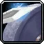
Silex à aiguiser solide51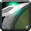
Silex à aiguiser lourd47 Barre de thorium lourd37
Barre de thorium lourd37 Barre d'argent33
Barre d'argent33 Barre de vrai-argent32
Barre de vrai-argent32 Barre de fer31
Barre de fer31 Silex à aiguiser brut31
Silex à aiguiser brut31 Barre de thorium enchanté26
Barre de thorium enchanté26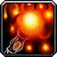
Catalyseur élémentaire26 Barre de sombrefer22
Barre de sombrefer22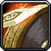
Silex à aiguiser dense21 Barre d'acier20
Barre d'acier20 Barre de légionite17
Barre de légionite17 Barre d’azerothium9
Barre d’azerothium9 Barre d'or8
Barre d'or8 Petit éclat d'obsidienne6
Petit éclat d'obsidienne6 Grand éclat d'obsidienne4
Grand éclat d'obsidienne4 Pierre brute4
Pierre brute4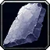
Pierre dense4 Pierre de gardien3
Pierre de gardien3 Pierre grossière3
Pierre grossière3 Pierre lourde3
Pierre lourde3 Pierre solide3
Pierre solide3 Lingot de sulfuron1
Lingot de sulfuron1
Herbes — 4
Cuirs, peaux et écailles — 9
 Cuir immaculé30
Cuir immaculé30 Cuir lourd21
Cuir lourd21 Cuir robuste18
Cuir robuste18 Cuir moyen16
Cuir moyen16 Cuir enchanté15
Cuir enchanté15 Cuir épais15
Cuir épais15 Cuir léger8
Cuir léger8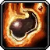
Cuir du Magma2 Cuir de diablosaure1
Cuir de diablosaure1
Tissus — 3
Éléments et matériaux d’enchantement — 19
 Essence malléable de la nature27
Essence malléable de la nature27- Coeur de feu14
 Essence de terre13
Essence de terre13 Essence de magie inférieure10
Essence de magie inférieure10 Gros éclat luminescent10
Gros éclat luminescent10 Poussière étrange10
Poussière étrange10 Essence de feu9
Essence de feu9- Globe d'eau8
 Essence d'eau7
Essence d'eau7 Essence d'air5
Essence d'air5 Essence de vie5
Essence de vie5 Noyau de terre4
Noyau de terre4 Essence de non-mort3
Essence de non-mort3 Terre élémentaire3
Terre élémentaire3 Air élémentaire2
Air élémentaire2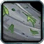
Souffle de vent2 Cristal de nexus1
Cristal de nexus1 Eau élémentaire1
Eau élémentaire1 Ichor de non-mort1
Ichor de non-mort1
Pièces d’ingénierie — 2
Fils, fioles, teintures et autres composants — 34
 Acide sulfurique30
Acide sulfurique30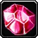
Rubis étoilé24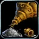
Catalyseur puissant20 Saphir bleu20
Saphir bleu20 Catalyseur léger19
Catalyseur léger19 Oeil ténébreux18
Oeil ténébreux18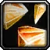
Oeil de tigre16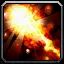
Noyau de feu14 Noyau de lave14
Noyau de lave14 Diamant d'Azeroth13
Diamant d'Azeroth13 Jade13
Jade13 Perle noire13
Perle noire13 Petite perle satinée13
Petite perle satinée13 Aigue-marine11
Aigue-marine11 Citrine11
Citrine11 Grande opale11
Grande opale11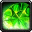
Énorme émeraude11 Pierre de lune inférieure10
Pierre de lune inférieure10 Perle dorée8
Perle dorée8 Teinture verte6
Teinture verte6 Âmarite6
Âmarite6 Malachite5
Malachite5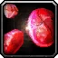
Sang de la montagne5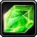
Agate mousse4 Rune démoniaque4
Rune démoniaque4 Rune ténébreuse4
Rune ténébreuse4 Grand croc3
Grand croc3 Mojo puissant3
Mojo puissant3- Orbe de piété3
 Rune de givre3
Rune de givre3 Griffe aiguisée2
Griffe aiguisée2 Perle iridescente2
Perle iridescente2 Serre cruelle1
Serre cruelle1 Torbernite1
Torbernite1
Objets utilisés comme composants — 17
 Flacon de pouvoir suprême3
Flacon de pouvoir suprême3 Cristal de puissance jaune2
Cristal de puissance jaune2 Cristal de puissance rouge2
Cristal de puissance rouge2 Huile glaciale2
Huile glaciale2 Armure verte en cuir1
Armure verte en cuir1 Cristal de puissance bleu1
Cristal de puissance bleu1- Cristal de puissance vert1
 Cœur de golem1
Cœur de golem1- Diamant noir1
 Flacon de sagesse distillée1
Flacon de sagesse distillée1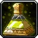
Flacon des Titans1 Gants de gardien1
Gants de gardien1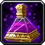
Huile des ténèbres1 Peau des ombres1
Peau des ombres1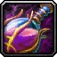
Potion d'Invisibilité inférieure1 Potion de rapidité1
Potion de rapidité1 Élixir de force d’ogre1
Élixir de force d’ogre1
Composants de chaque recette · 420 recettes
Historique des corrections
- 12 novembre 2026 (brouillon, non validé) : première liste complète des recettes de ce métier, d’après des données extraites du client, avec mention « à confirmer ». Aucune publication.[4][1]
- 13 novembre 2026 : « à confirmer » retiré des faits trouvés dans les fichiers du jeu (client 1.60.1.70862), décision t359u. L’obtention « inconnu », les zones non indiquées, les sources sans tampon de build et les valeurs seulement déduites restent à confirmer. Ce n’est pas une confirmation officielle de Blizzard, ni une mise en ligne.[4] Données du jeu (client 1.60.1.70862)
- 14 novembre 2026 : liens internes vers les fiches déjà publiées (bestiaires, listes de recettes, donjons) — lot v40, t361u. Aucun fait nouveau.[1][2][3][4]
- 17 novembre 2026 (v42) : ajout de la section « Matériaux : où les trouver » (composants de chaque recette, lus dans les fichiers du jeu, client 1.60.1.70862).[5] Données du jeu (client 1.60.1.70862)
Ce qui est confirmé / ce qui reste à confirmer
Confirmé par les sources officielles
Reste à confirmer
- Liste officielle complète des recettes, matériaux, prix et formateurs nommés : non publiée par Blizzard.
- Pour une partie des recettes, l’obtention, la source ou la zone n’était pas indiquée dans les données consultées ; ces cellules restent à « non indiqué ».
- Taux de butin : non indiqués dans les données consultées, et non publiés officiellement.
- Certaines recettes n’ont pas de nom français distinct dans les données consultées : le nom anglais est alors utilisé.
Dates clés
Sources
- [1] Récapitulatif de la présentation « Au cœur de World of Warcraft: Forever » (FR) · publié le · consulté le
World of Warcraft: Forever Deep Dive Panel Recap (EN) · publié le · consulté le - [2] Retrouvez-vous autour d’un feu de camp dans World of Warcraft: Forever (FR) · publié le · consulté le
Gather Around the Campfire in World of Warcraft: Forever (EN) · publié le · consulté le - [3] WoW: Forever Hotfixes - November 11, 2026 (EN) · publié le · consulté le
- [4] Guide Forge — liste des recettes (données du jeu (client 1.60.1.70862) (FR) · date de publication non indiquée · consulté le
Blacksmithing profession guide — full recipe list (game data (client 1.60.1.70862) (EN) · date de publication non indiquée · consulté le Données du jeu — client 1.60.1.70862 - [5] WoW Forever client files, build 1.60.1.70862 — data tables and icons read from Blizzard’s official CDN (EN) · date de publication non indiquée · consulté le Données du jeu — client 1.60.1.70862
Sources officielles Blizzard Entertainment (droits réservés). Ce wiki en propose une synthèse originale ; seules de courtes citations sont reproduites. Les informations annoncées peuvent évoluer avant ou après le lancement. Les sources marquées « données du jeu » viennent des fichiers du client WoW Forever (build 1.60.1.70862). Ce n’est pas une confirmation officielle de Blizzard.
Version documentaire : World of Warcraft: Forever — annonces officielles et fichiers du jeu (client 1.60.1.70862), état documentaire 2026-11-17 · révision 17